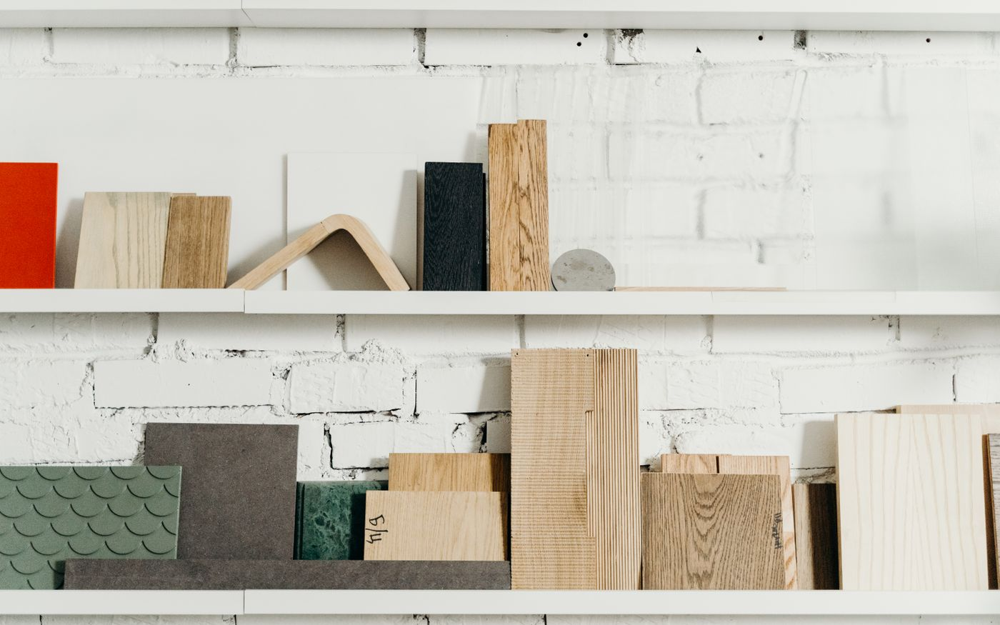

Deux structures, deux comportements
Le massif est une pièce de bois pleine, de 14 à 23 mm d'épaisseur. Il travaille dans toute sa masse au gré de l'hygrométrie.
Le contrecollé superpose une couche d'usure en bois noble, une âme en bois résineux ou en contreplaqué à fils croisés, et un contre-parement. Ce croisement des fibres limite fortement les variations dimensionnelles.

Comparatif orienté pose
| Critère | Massif | Contrecollé |
|---|---|---|
| Poses possibles | Clouée, collée | Collée, flottante |
| Stabilité dimensionnelle | Sensible à l’hygrométrie | Très stable |
| Chauffage au sol | Déconseillé sauf produit certifié | Adapté en pose collée |
| Épaisseur courante | 14 à 23 mm | 10 à 15 mm |
| Ponçages | 5 à 7 | 2 à 3 |
| Grands formats et motifs | Limité par les mouvements | Bien adapté |
Ce que cela change concrètement sur le chantier
- Tolérance sur le support : le contrecollé flottant demande une planéité plus stricte que le massif cloué sur lambourdes.
- Hauteur disponible : sous une porte ou face à un carrelage existant, les quelques millimètres d'écart peuvent décider seuls.
- Motifs : Point de Hongrie et bâton rompu se posent plus sereinement en contrecollé collé, plus stable.
- Acoustique : en appartement, la pose collée en plein réduit nettement les bruits d'impact par rapport à une pose flottante.
Et en rénovation ?
Sur un ancien plancher bois sain, le massif cloué reste cohérent. Sur une dalle béton en rénovation d'appartement, le contrecollé collé est le choix le plus sûr, particulièrement avec un chauffage au sol.
Pour comparer des gammes existantes et leurs épaisseurs de couche d'usure, un distributeur spécialisé comme Premibel publie les caractéristiques techniques détaillées de ses parquets contrecollés, utiles pour vérifier ces points avant de commander.
Questions fréquentes
Non. Un parquet contrecollé possède une couche d'usure en bois noble d'au moins 2,5 mm. En dessous, on parle de sol stratifié, qui n'est pas un parquet.
Un massif de 20 mm accepte cinq à sept ponçages. Un contrecollé avec 3 mm de couche d'usure en accepte deux à trois, ce qui couvre déjà plusieurs décennies d'usage domestique.
Un contrecollé collé en plein, avec une épaisseur maîtrisée et une essence stable. Le massif est déconseillé, sauf produits spécifiquement certifiés compatibles.